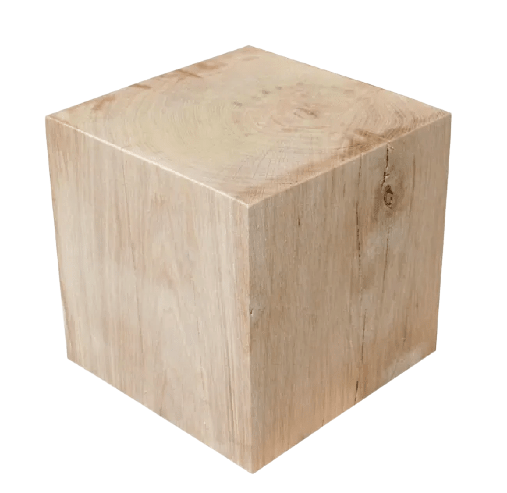

KruiKube Bois
Matériau : Bois
Prix : 39.99€
Dimensions : 16 x 16 cm
Description :
Ce KruiKube est le fruit d'années de recherches et développement de la part de notre équipe d'ingénieur. A la fois écologique et décoratif, il saura mettre en valeur nimporte quelle pièce de votre maison en un rien de temps. Dites bonjour à KruiKube Bois !
Un bois de qualité optimal
Chez Kruikube nous nous assurons personnellement de la qualité de notre bois.
Chez nous, aucune place n'est laissé au hasard. Contrairement à nos concurrents qui
en sont réduit à devoir, sans mauvais jeu de mot, toucher du bois !
Ainsi parmis nos fournisseurs en bois on retrouve l'entreprise locale Bois-Sons,
dirigé par l'ancien barman et amateur de... et bien de boissons, j'ai nommé
George Sapolapine.
Mais nos ne nous reposons pas seulement sur la production locale, surtout pendant
les periodes de fêtes ou nos fideles partenaires de chez Bois-Sons passent des soirées
sacrement arosées.
C'est donc pour cela qu'en ces periodes de creux, pour ne pas dire de cuite, que la
grande, magnifique, merveilleuse et majestueuse multinational Arts-Naqueur nous
cède son surplus de bois.
Surplus dont la qualité n'est pas à remettre en doute, puisque nous
nous occupons personnellement d'en verifier la qualité.
Cette tache revient donc à nos plus fidèles employés Tique et Taque, dont l'embauche
la semaine dernière nous a excessivement ravi puisque nous les avons debauché chez l'un
de nos partenaire, qui n'est autre que la grande, magnifique, merveilleuse et
majestueuse multinational Arts-Naqueur elle même.
Ainsi donc nous avons pu eviter tout eventuel, pour ne pas dire probable,
conflit d'interêt non pas bancaire mais qualitatif (en terme de bois), et ce
dans le but de pouvoir assurer à notre genereuse clientelle une qualité de conception
des plus certaines.
N'éhistez pas, visitez dès maintenants notre page Kruikube Acier Corten